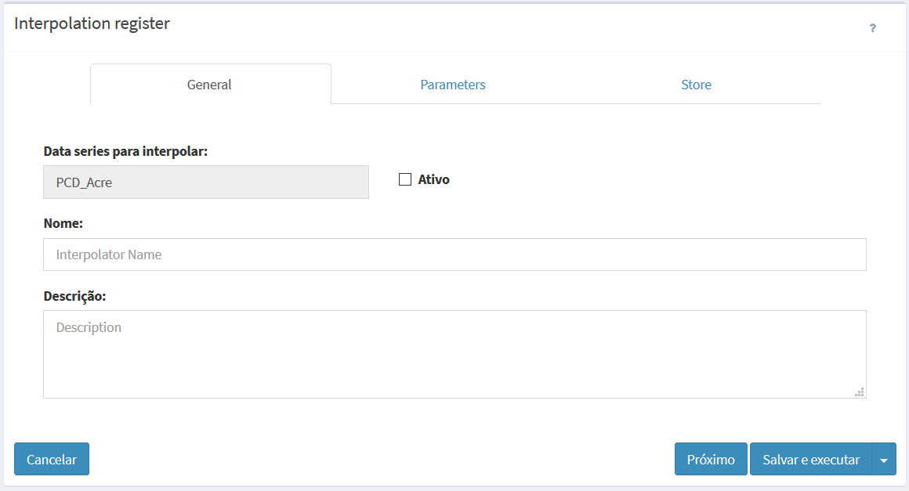

Interpolação
Os dados dinâmicos do tipo PCD podem ser interpolados para criar novos dados dinâmicos matriciais. O usuário pode escolher o interpolador a ser utilizado, o tamanho da área a ser coberta pelo dado matricial e a resolução da grade. Um intervalo de tempo é utilizado para busca do dado de cada PCD mais próximo do horário de execução da interpolação.
ADICIONANDO DADO DINÂMICO - INTERPOLAÇÃO:
Para adicionar um novo dado dinâmico do tipo Interpolação é necessário ter um projeto ativo. No menu de opções selecione “  Dados Dinâmicos” para que a lista de dados disponíveis seja apresentada na área de trabalho. Clique no botão “Interpolar“ referente a série de dados de PCD. Defina os parâmetros de interpolação e utilize o botão “Salvar” para salvar o dado dinâmico por interpolação. Não é permitido nomes de dados em duplicidade. Botão “Cancelar” volta à tela anterior sem salvar o dado. A Figura 2.22 mostra a área de trabalho para adicionar nova interpolação. Detalhes de cada campo a seguir.
Dados Dinâmicos” para que a lista de dados disponíveis seja apresentada na área de trabalho. Clique no botão “Interpolar“ referente a série de dados de PCD. Defina os parâmetros de interpolação e utilize o botão “Salvar” para salvar o dado dinâmico por interpolação. Não é permitido nomes de dados em duplicidade. Botão “Cancelar” volta à tela anterior sem salvar o dado. A Figura 2.22 mostra a área de trabalho para adicionar nova interpolação. Detalhes de cada campo a seguir.

Figura 2.22 – Módulo de Administração: Adição de dado dinâmico - Resultado de Interpolação
Registro de Interpolação - Geral:
- Série de Dados para Interpolar: Campo informado qual a fonte de dados utilizada para criar as grades resultantes da interpolação. IMPORTANTE: Esta fonte de dados deve ter coletado dados previamente.
- Nome: Defina o nome da interpolação (campo obrigatório para passar para os demais itens). O tamanho máximo do nome é de 100 caracteres. Não é permitido nomes duplicados. DICA: use nomes que indiquem a fonte de origem e atributo a ser escolhido em "Parâmetros"
- Descrição: Campo não obrigatório para descrição do dado dinâmico. O tamanho máximo da senha é de 250 caracteres.
- Ativo: Botão ativo permite executar a interpolação em questão. Botão desmarcado não executa a interpolação, a não ser que o usuário execute manualmente.
Registro de Interpolação – Parâmetros:
Utilize os parâmetros dessa aba para informar a estratégia de interpolação e área de cobertura da grade de saída e o atributo da PCD.
- Estratégia.
- Estratégia de Interpolação : Clique no campo para escolher o interpolador. Opções são "Vizinho mais próximo", "Vizinho médio" ou "Vizinho médio ponderado".
- Atributo da interpolação: Digite o atributo da PCD a ser utilizado.
- Número de Vizinhos : Digite o número de vizinhos a ser utilizado para os cálculos.
- Fator de Potência (somente se interpolador for “Vizinho médio ponderado”): Digite a potência do interpolador.
- Unidade de tempo: Escolha a unidade.
- Valor de tempo: Digite o valor.
- Área: Nessa seção o usuário deve definir a área de cobertura da grade de saída.
- X min: Digite o valor mais à esquerda da área da grade de saída. Valor depende do sistema de projeção utilizado.
- Y min: Digite o valor mais abaixo da área da grade de saída. Valor depende do sistema de projeção utilizado.
- X max: Digite o valor mais à direita da área da grade de saída. Valor depende do sistema de projeção utilizado.
- Y max: Digite o valor ponto mais à cima da área da grade de saída. Valor depende do sistema de projeção utilizado.
- Resolução X: Digite o valor da resolução na direção X. Valor depende do sistema de projeção utilizado.
- Resolução Y: Digite o valor da resolução na direção Y. Valor depende do sistema de projeção utilizado.
- Projeção (SRID): Valor numérico dos parâmetros de projeção e datum a ser utilizado pelo par de coordenadas e resolução acima. Veja os principais valores utilizados no anexo A1.
Exemplo: Para sistemas de coordenadas geográficas utilize o valores em graus decimais (-23.43, –45.22) para longitude e latitude, e para sistema de coordenadas projetados utilize os valores em metros (345455.32, 7455432.43).
Registro de Interpolação – Armazenar:
Utilize os parâmetros dessa aba para definir onde e como armazenar os dados matriciais dinâmicos resultado da interpolação.
- Formato de saída: Escolha o formato de saída. Opção disponível “Matriz – GeoTiff”.
- Armazenar Dados: Servidor de dados (tipo ARQUIVO) que irá armazenar dados processados.
- Serviço: Escolha o serviço de interpolação a ser utilizado.
- Máscara: Máscara do nome dos arquivos a serem armazenados. Utilize %YYYY para anos de 4 dígitos, %YY para anos de 2 dígitos, %MM para mês, %DD para dia, %hh para hora,%mm para minutos e %ss para segundos.
- Fuso Horário: Fuso horário do dado dinâmico a ser armazenado. Esse parâmetro garante que as datas e horas dos dados criados se mantenham consistentes com a base de dados. Dados em horário GMT devem utilizar o valor 0.
- Projeção (SRID): Valor numérico dos parâmetros de projeção e datum dos dados a serem armazenados.
- Armazenar - Agendamento: Nessa sessão o usuário deve definir quando será executada a interpolação.
- Tipo: Escolha tipo “Manual”, “Agendamento”, “Reprocessamento de dados históricos”, ou “Automático”. Se Manual a execução da interpolação só será realizada se o usuário utilizar o botão Executar no item da lista de dados dinâmicos que desejar, ou ainda em “Salvar e executar” da interpolação aberta. Se “Agendamento” ou “Reprocessamento de dados históricos” preencha os campos abaixo. Se “Automático” dependerá da chegada de novos dados dinâmicos.
- Data Inicial
 (somente se Tipo for “Reprocessamento de dados históricos”): Clique no campo para escolher a data e hora que será utilizada para início do reprocessamento.
(somente se Tipo for “Reprocessamento de dados históricos”): Clique no campo para escolher a data e hora que será utilizada para início do reprocessamento. - Data Final (somente se Tipo for “Reprocessamento de dados históricos”): Clique no campo para escolher a data e hora que será utilizada para fim do reprocessamento.
- Unidade de tempo: Escolha um item entre “Segundos, Minutos, Horas e Semanalmente”.
- Frequência (somente se Unidade de tempo for Segundos, Minutos, Horas): Digite um valor de um número inteiro.
- Tempo Inicial
 (somente se Unidade de tempo for Segundos, Minutos, Horas): Clique no campo para escolher o valor de hora, minuto e segundo que será utilizado como referência para executar a análise.
(somente se Unidade de tempo for Segundos, Minutos, Horas): Clique no campo para escolher o valor de hora, minuto e segundo que será utilizado como referência para executar a análise. - Agendamento (somente se Unidade de tempo for Semanalmente): escolha uma das opções entre “Domingo, Segunda-feira, Terça-feira, Quarta-feira, Quinta-Feira, Sexta-feira e Sábado”
- Hora
 (somente se Unidade de tempo for Semanalmente): clique no campo para escolher o valor de hora, minuto e segundo que será executada para iniciar a análise.
(somente se Unidade de tempo for Semanalmente): clique no campo para escolher o valor de hora, minuto e segundo que será executada para iniciar a análise.